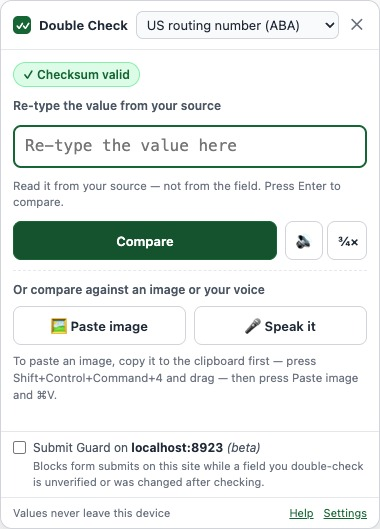
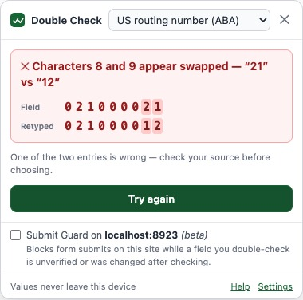
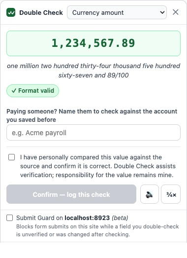
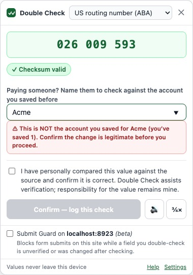
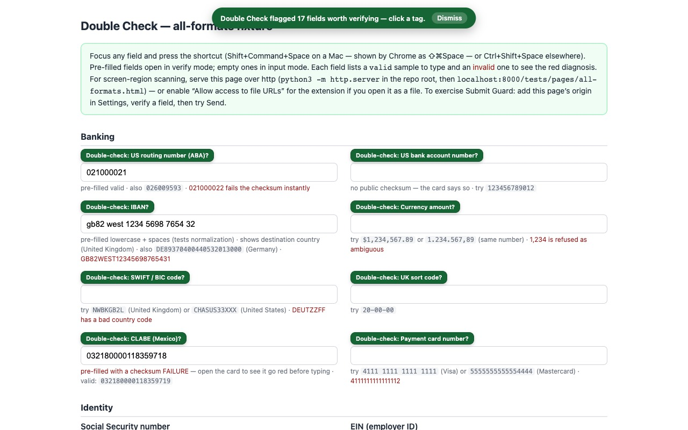

Double Check is a browser extension that prevents data-entry errors by mathematically validating high-stakes numbers and requiring you to independently retype them for a direct, on-site comparison within a website’s input field.
Double Check catches simple transcription errors, such as transposed digits, while also guarding against deliberate fraud, such as fake “changed bank details” emails and hidden look-alike characters.
Double Check is a second pair of eyes for numbers that can’t be wrong. Prevent expensive, embarrassing, and hard-to-reverse mistakes at the exact moment they happen.
How it works
Invoke it on the field
Click into the field and press ⇧⌘Space (Shift+Command+Space; Ctrl+Shift+Space elsewhere) — or right-click → “Double-check this field”.
Two independent readings
The format is detected and its math verified instantly. Then re-type the value from your source — or scan it, paste a screenshot, or read it aloud.
Green, attested, logged
A match goes green; you attest; the check is logged (never the value) and the field gets a badge that flips to a warning if anything changes it afterwards.
Security: it can’t see your data until you ask
Double Check has no standing access to any website. It isn’t running in the background on the pages you visit — there’s no script watching your typing, no analytics, no telemetry. It wakes up on a page only when you invoke it: the keyboard shortcut, the toolbar icon, or the right-click menu. Even then it reads only the field you point it at, in that moment, and runs every check — including OCR and voice — entirely on your device. Nothing is transmitted.
Right-click to check a whole page
Most people never discover this: right-click anywhere on a page and Double Check gives you two commands.
Find fields to double-check
Marks every high-value field on the page — account and routing numbers, amounts, IDs, card fields — so you can see at a glance what’s worth verifying before you submit.
Check this page for problems
Audits every filled field and flags the ones with a real issue: a failed checksum, a wrong country code, a hidden or look-alike character — each one a click away from fixing.
Both run only when you choose them — on that page, in that moment, never before.
See it in action





Everything it does
Real checksum math, not just patterns
23 built-in formats. Routing numbers, IBANs, cards, CLABE, CUSIP, ISIN, VINs, and crypto addresses carry internal check digits — Double Check computes them, so a single wrong digit is often caught before you re-type anything.
Remembers the right account for each payee
Name the payee on a match and Double Check remembers that account — as a one-way fingerprint, never the value. Next time it confirms “✓ matches Acme’s usual account,” or warns “⚠ this is NOT the account you saved for Acme.” The catch for fake “our bank details changed” emails, which no checksum can spot.
Two signatures for the highest-stakes fields
Mark a field “require two signatures” and the attestation becomes “We have personally compared…”. Two people each type their name — they must differ — before the check can be confirmed, and both names are saved with the entry.
Find the risky fields for you
Right-click a page and choose “Find fields to double-check.” Double Check scans the page and tags the high-value fields — account and routing numbers, amounts, IDs — so you know exactly what to verify. It reads field labels, never values.
Audit a whole page in one click
Right-click and choose “Check this page for problems.” Double Check inspects every filled field and flags the ones with a real issue — a failed checksum, a wrong country code, a hidden or look-alike character — each with a clearable note.
Blind double entry
Re-type the value from your source — not from the field. Two independent readings must agree. Empty fields get a safe two-step entry flow.
Amounts taken seriously
US and European separators both parse; ambiguous amounts like “1,234” are refused rather than guessed. Matches confirm in words: one million two hundred thousand and 00/100.
Shows where the money is going
For IBANs and SWIFT/BIC codes, Double Check names the destination country — so a payment headed somewhere you didn’t expect stands out before you send it.
Catches what the eye can’t
Invisible characters and look-alikes — a Cyrillic “а” or a zero-width space pasted from a document — are flagged. They sail past a glance but break the value, or hide an attack.
Compare against an image
Paste a screenshot or phone photo of the value — from another tab, a PDF, an email, anywhere. A bundled OCR engine reads it on your device; images are never uploaded.
Speak it
Read the value aloud from the paper in your hand; Chrome’s on-device speech recognition transcribes it (Chrome 139+). No audio ever leaves your machine.
Hear it read back
A local on-device voice reads the value digit by digit, at the speed you choose — read along on your source.
A badge that stays honest
Verified fields get a “Double-Checked” badge. If the value changes afterwards — any reason, any keystroke — it flips to a warning and the log entry is marked stale.
Proof without the value
Every attested check is logged: when, where, what format, which methods, your attestation — never the value itself. Export CSV/JSON for your records.
A tamper-evident log
Every entry is sealed with a keyed hash chained to the one before it. One click recomputes the chain and tells you whether anything was edited, removed, or reordered since it was written — on this device. It’s integrity, not identity or legal proof.
Notes on a check
Add an optional note — where a value came from, how it was calculated. It’s saved and sealed with the entry. (Keep the value itself out of it; that’s never stored.)
See what it’s caught
A running, local-only tally of what Double Check has actually caught for you — mismatches, bad values, account-change warnings, page problems. Real events, never an estimated dollar figure.
It remembers each site
Confirm a field is an IBAN once and the right format is preselected on that site forever after.
Your own formats
Vendor IDs, policy numbers, internal schemes — defined as data (patterns, lengths, checksum algorithms), never code, and shareable with your team as files.
Expected amount range
Give a format an expected min/max. A value that parses as an amount outside it gets a soft warning — never a block — so an unusually large wire stands out. The bounds are your own configuration; no past values are stored.
Submit Guardbeta
Flip it on for a site and its forms won’t submit while a field you double-check there is unverified or was edited after checking.
Keyboard-first
Invoke, verify, and attest without touching the mouse. Built for people who enter numbers all day.
Formats it verifies out of the box
Two checks apply to everything below: blind double-entry (you re-type from your source and the two readings must agree) and look-alike / hidden-character detection (a Cyrillic “а”, a full-width “０”, a zero-width space). On top of that, each format gets:
Mathematically checksummed — a single wrong character is caught instantly
- US routing number (ABA) — 9 digits; ABA mod-10 check digit computed and verified.
- IBAN — ISO 13616 mod-97 check; verifies the country-specific length and names the destination country.
- Payment card number — 12–19 digits; Luhn check digit; identifies the card network from the prefix.
- CLABE (Mexico) — 18 digits; CLABE mod-10 weighted check digit.
- CUSIP (US security ID) — 9 chars; CUSIP mod-10 check digit.
- ISIN (international security ID) — 12 chars; Luhn-based check digit over the letter-expanded value.
- VIN (vehicle ID) — 17 chars; mod-11 check digit with the standard transliteration.
- Bitcoin address — Base58Check for legacy addresses, Bech32/Bech32m for SegWit — full checksum.
- Ethereum address — 40 hex chars; EIP-55 mixed-case checksum verified when the address is checksum-cased.
Structurally validated — no formal checksum, but impossible values are rejected
- US Social Security number — rejects never-issued ranges (area 000/666/900+, group 00, serial 0000).
- US EIN (employer ID) — rejects prefixes the IRS never issues.
- SWIFT / BIC code — validates the ISO country code at positions 5–6 and names the bank’s country.
- IP address (v4 or v6) — full structural validity (octet ranges, group rules, “::” compression).
- Date (MM/DD/YYYY, DD/MM/YYYY, YYYY-MM-DD) — real-calendar validity for the chosen order.
- Currency amount — parses US and European separators, refuses genuinely ambiguous ones, and confirms the value in words.
Shape-checked — format and length, so blind double-entry is the real check
- US bank account number — 4–17 digits; flagged as having no public checksum.
- UK sort code — 6 digits.
- Phone number — E.164-style (+ and 7–15 digits).
- Email address — local@domain.tld structure.
- Number (any) and Text (exact match) — pure double-entry.
Need something niche — a vendor ID, a policy number, an internal account scheme? Define your own in the Formats tab: clean-up rules, a pattern, a length range, a checksum from a menu of standard algorithms, and an optional “unusually large” amount warning. Formats are data, not code, and export as files your team can share.
Pricing
Cancel anytime.
Two months free. The plan most people pick.
For people who hate subscriptions.
Every plan starts with a 7-day free trial — full features, no card required. And core double-entry checking keeps working even without a subscription, because a safety check should never be held hostage.
Who it’s for
Accountants and bookkeepers entering wire details. Accounts-payable and treasury teams. Payroll. Paralegals filing with exact case numbers. Crypto users pasting addresses. Anyone who has ever stared at a routing number, looked away, looked back, and wished someone would check it with them.
Double Check assists verification; responsibility for submitted values remains yours. It’s the second pair of eyes — you’re still the first.